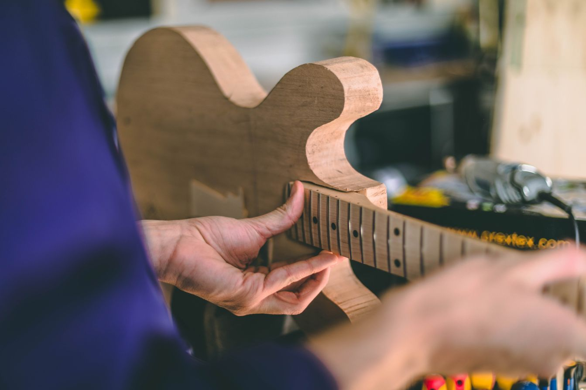
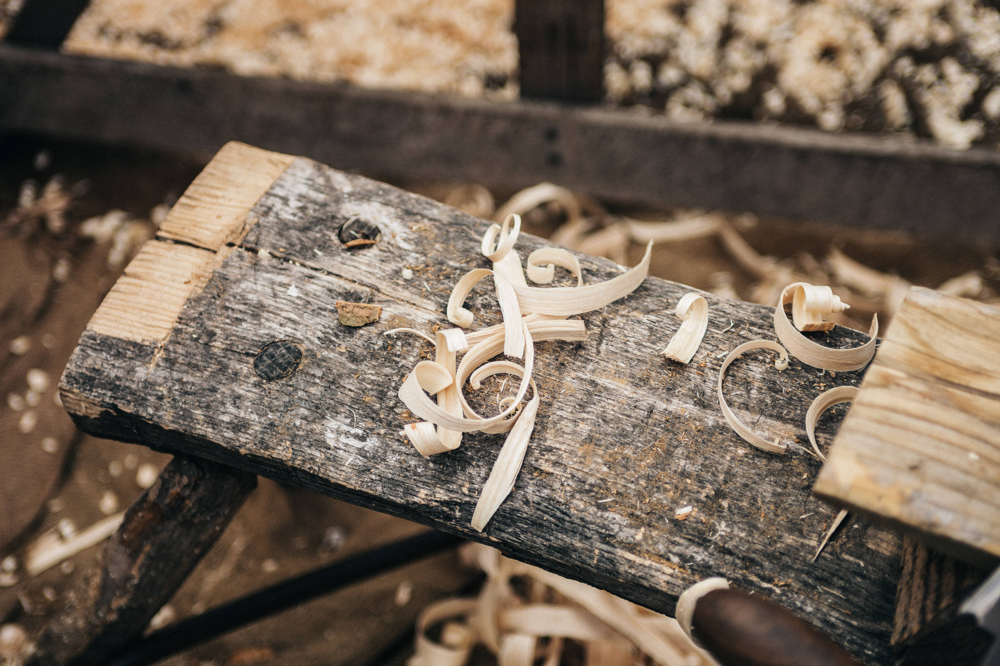

Cuidadosamente feitos à mão
Seus instrumentos sendo tratados com o carinho que eles merecem, garantindo o som ideal para suas músicas.
Você em contato com a natureza
Usando as melhores madeiras para você fazer as melhores músicas. Sem esquecer dos cuidados com a natureza
